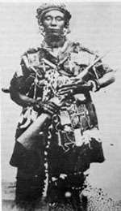

Call us on: +233 257638022
Email us: abc@gmail.com
Okomfo Anokye Statue
OKOMFO ANOKYE
Okomfo Anokye was one of the greatest fetish priests.He helped asanteman in numerous ways.
Name- Kwame Ano Frimpong
Other names- Okomfo Anokye
Place of birth- Awukugua
MIRACLES
- HE COMMANDED THE GOLDEN STOOL ALSO KNOWN AS SIKA DWA KOFI FROM THE SKY WHICH SYMBOLIZES ASHANTI UNITY
- HE PLANTER A COOKED PLANTAIN,IT GERMINATED AND HE HARVESTED THAT SAME DAY
- HE CARVED OWARE GAME ON A STONE WITH HIS BARE HANDS
- HE DRAINED AGYEPANSU A STREAM,REFILLED IT AND NAMED IT SUBIN
- HE TURNED HIS WIFE INTO A RIVER
- HE CLIMBED A TREE WITH THORNS BAREFOOTED
- HE TELEPORTED WITH HIS PARENTS FROM FARM TO HOME
- HE COMMANDED THE RAINS TO STOP
- HE CREATE FOOTPRINTS ON ROCKS AT ASONASO
- HE POURED THE DREGS OF A PALM-WINE ONTO THE GROUND AND IMMEDIATELY AN OIL-PALM TREE WAS GROWN. IT IS ALLEGED THAT IT STANDS BEHIND HIS SHRINE 'OBUABEDURU
- HE USED HIS WOODEN SANDALS TO CLIMB THE PALM TREE AND LEFT SOME IMPRINTS OF HIS FEET ON THE TREE
- HE COD WALK THROUGH RAIN WITHOUT GETTING DRENCHED OR WET
- HE COULD THROUGH AN EGG AT A ROCK AND IT WOULD NOT BREAK
- HE PLANTED A SWORD AND SAID THAT PLACE WILL BE THE CENTER OF KUMASI
ALSO,HE PROPHESIED THAT PEOPLE WILL BE BORN THERE AND HE DIE THERE HENCE KATH
Yaa Asantewaa
YAA ASANTEWAA
Yaa Asantewaa was a courageous Ejisu queen mother who played a key role in the Ashanti-British "War of the Golden Stool" in 1900. Her leadership and bravery are celebrated in history.
Yaa Asantewaa was born around 1840 in the Ashanti Empire, present-day Ghana. She was a member of the Ashanti royal family and held the title of queen mother. In 1900, tensions arose between the Ashanti people and British colonial forces over the Ashanti Golden Stool, a revered symbol of the Ashanti monarchy.
When Ashanti leaders hesitated to take action against the British, Yaa Asantewaa emerged as a charismatic and determined leader. In March 1900, she gathered the Ashanti leaders and warriors, delivering a powerful speech urging them to stand against British colonialism. Her rallying cry inspired the Ashanti-British war known as the War of the Golden Stool.
Yaa Asantewaa led troops into battle, demonstrating exceptional bravery. Unfortunately, the Ashanti were eventually defeated, and Yaa Asantewaa was captured and sent into exile. Despite the defeat, her legacy lives on as a symbol of resistance and the fight for freedom in Ghana's history.
Yaa Asantewaa's contributions to the struggle for independence have made her a revered figure, and her story continues to inspire generations in Ghana and beyond.